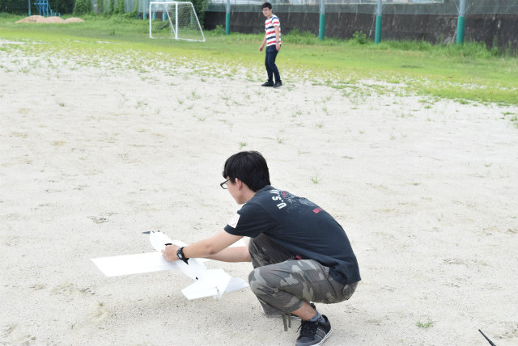
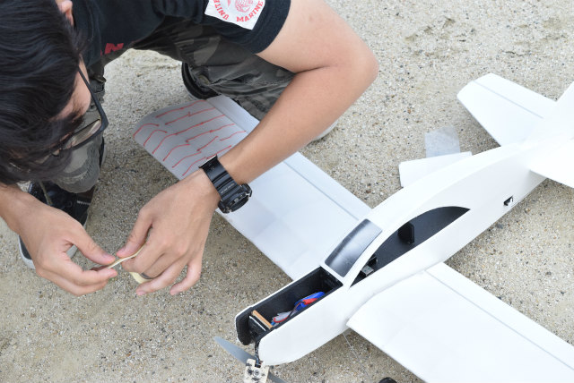
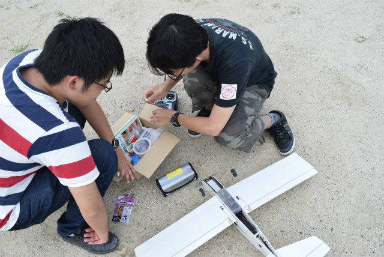
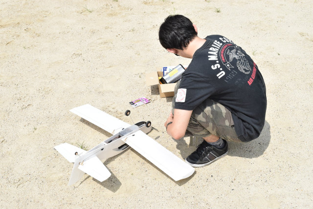
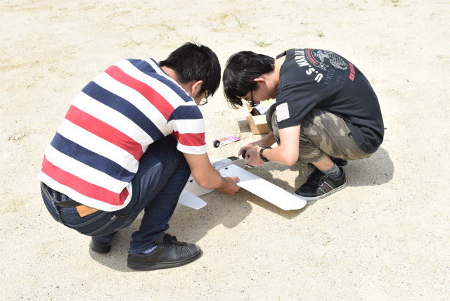

| ・ 計測3号_03 (H28.08.03) | |||
夏期休暇に入り運動部に明け渡すため運動場貸切実験はいったん終了．飛ぶようになって来ましたが，まだ高度をあげられない．上げないと運動器具にぶつかるし，あまり上げてしまうとネットを越えてしまう．まずは低めからですね． |
|||
|

今日はいけるはず |

基本的に養生テープで修理 | ||
|

B4のI垣くんのお手伝い |

だいぶ機体がへたってきた | ||
|

準備万端 |
面白そうな飛行でしたが翼面撮り忘れ | ||
|
良い感じの飛行 |
翼面の様子 | ||